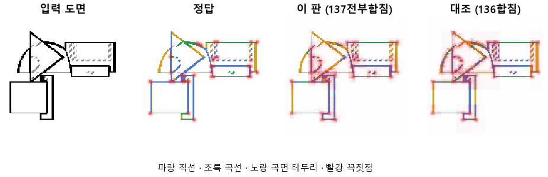

한 줄로
물음: 그림 특징을 뽑는 CNN의 가운데 층까지 다 넘겨주면, 곡선 바로 옆에 있는 직선을 곡선으로 잘못 읽는 일이 줄어들까?
답: 그 실수는 0.40에서 0.24로 줄었다. 대신 곡선을 맞히는 비율은 0.82에서 0.76으로 떨어졌다. 기준 8개 중 3개만 넘어서 판정은 실패다.
왜 이 판을 했나
이 모델은 부품 도면 한 장(128×128)을 받는다. 그리고 화소마다 선이 있는지, 있으면 직선·곡선·곡면 테두리·숨은선 중 무엇인지를 고른다. 꼭짓점도 따로 찍는다. CNN은 네 층(블록 1~4)으로 되어 있다. 이 고르는 부분이 그중 어느 층의 특징을 받느냐가 실험 대상이다.
앞 판(136)에서는 맨 앞 층과 맨 뒤 층만 받았다. 선 자리는 거의 완벽했지만, 곡선에서 3화소 안에 있는 직선은 0.40을 곡선으로 읽었다. 가운데 두 층은 위치와 종류를 반씩 알 것으로 보았다. 그래서 이 둘까지 넣으면 덜 섞일 거라고 예상했다.
바꾼 것 하나
두 층만 받던 것을 네 층 전부 받게 했다. 학습 60바퀴, 학습 부품 3,000개, 시험 부품 299개는 136과 같다.
결과

기준은 8개고, 다 넘어야 성공이다. 이 판에서 미리 예측한 값 다섯 개와, 판마다 재는 최종 목표 세 개(곡선·직선 0.90, 꼭짓점 0.75)가 있다.
| 이 판 (137) | 대조 (136) | 목표 | 넘었나 | |
|---|---|---|---|---|
| 곡선 옆 직선을 곡선으로 틀림 | 0.24 | 0.40 | 0.25 아래 | ✓ |
| 선이 있는 자리를 찾음 | 0.999 | 0.999 | 0.95 | ✓ |
| 선 없는 곳에 잘못 그림 | 0.01 % | 0.01 % | 2 % 아래 | ✓ |
| 곡선을 곡선으로 (예측) | 0.76 | 0.82 | 0.85 | ✗ |
| 직선을 직선으로 (예측) | 0.78 | 0.69 | 0.80 | ✗ |
| 곡선을 곡선으로 (최종) | 0.76 | 0.82 | 0.90 | ✗ |
| 직선을 직선으로 (최종) | 0.78 | 0.69 | 0.90 | ✗ |
| 꼭짓점 (F1) | 0.51 | 0.45 | 0.75 | ✗ |
F1은 「찾은 점 중 맞은 비율」과 「정답 점 중 찾은 비율」을 함께 본 점수다. 1이면 완벽하다.
왜 이렇게 나왔나
확인한 것
- 곡선 옆 직선을 틀리는 비율은 0.16 줄었다. 직선 전체도 0.69에서 0.78로 올랐다.
- 대신 곡선이 0.82에서 0.76으로 떨어졌다. 모든 선 화소에서 종류를 맞힌 비율은 0.74에서 0.76으로 조금만 올랐다.
- 선 자리와 헛선은 136과 같다. 가운데 층을 넣어도 위치는 망가지지 않았다.
- 45바퀴 뒤로 학습 쪽 손실은 3.83에서 3.73으로 계속 내려갔지만, 시험 쪽은 3.88~3.90에 머물렀다.
짐작 (아직 확인 안 함)
- 실제로 더 잘 구분하게 됐다기보다, 애매한 화소를 「직선」이라고 부르는 쪽으로 기울었을 수 있다. 직선이 오르고 곡선이 내린 모양이 그렇다.
한계
- 시험 부품 299개로 한 번만 돌렸다. 다시 돌렸을 때의 흔들림은 재지 않았다.
- 같은 학습끼리 0.1 넘게 어긋난 적이 있다(133·134). 그래서 곡선 −0.06, 직선 +0.09, 꼭짓점 +0.06은 모두 흔들림 안쪽일 수 있다. 0.24도 목표를 0.01 차이로 넘었을 뿐이다.
- 곡선이 떨어진 이유는 짐작만 있고 확인하지 못했다.
배운 것과 다음
가운데 층을 넣자 곡선 옆 직선의 실수는 줄었다. 하지만 곡선 쪽 정답을 내주고 직선 쪽을 얻은 것에 가깝다. 층을 더 넘겨주는 것만으로는 둘을 함께 올리지 못한다.
- 곡선을 직선으로 새로 틀린 자리를 그림으로 모아, 쏠림인지 구분이 나아진 건지 가린다.
- 같은 설정으로 한 번 더 돌려 흔들림 크기를 잰다.
- 꼭짓점을 앞 층에서 바로 찍게 해 본다.